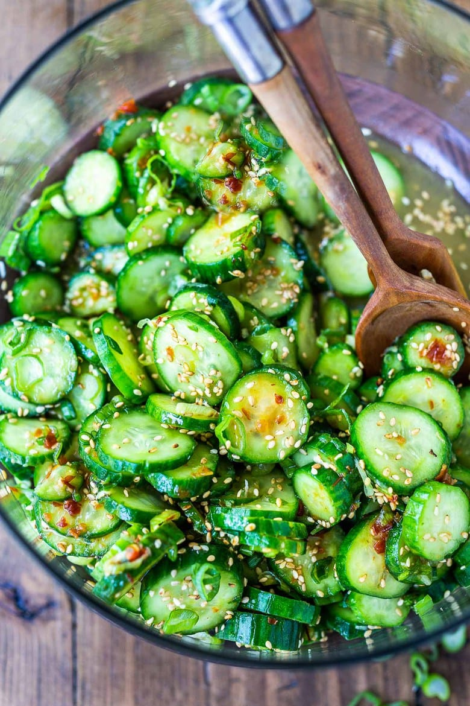

Asian Cucumber Salad

Description
Asian Cucumber Salad is a refreshing and crunchy dish typically featuring thinly sliced cucumbers tossed in a flavorful dressing made with rice vinegar, sesame oil, soy sauce, sugar, and sometimes ginger and garlic.
Ingredients
- 1 1/2 pounds Turkish, Persian or English cucumbers (about 5 cups sliced)
- 1/2 teaspoon salt
- 4-5 scallions, finely sliced
- 1 teaspoon ginger, grated
- 1 clove garlic, finely minced
- 1/4 cup rice vinegar
- 1 tablespoon soy sauce, (for gluten-free use Bragg's Liquid Aminos or Coconut aminos)
- 1 tablespoon toasted sesame oil
- 1 tablespoon maple syrup (or honey, or sugar), more to taste
- 1 teaspoon chili garlic sauce (sambal olek) or sriracha, more to taste
- 1-2 tablespoons toasted sesame seeds
Steps
- Using the tines of a fork, score the cucumbers lengthwise- this will help the dressing cling to the cucumber. (Feel free to skip if in a hurry.)
- Slice the cucumbers thinly. Place in a mixing bowl and toss with the salt to help them release water. Let this stand while you gather the remaining ingredients.
- Strain the cucumbers using a fine mesh strainer (do not rinse) and place them in a large mixing bowl. add the scallions, ginger, garlic, rice vinegar, soy sauce, sesame oil, maple syrup, optional red chili paste and toasted sesame seeds. Mix to combine.
- Taste and adjust salt and sweetness to your liking. Add more chili paste if you like.
- Refrigerate until ready to serve. Cucumber salad is best served on the same day but will keep for up to 3 days in an airtight container in the refrigerator.
Other recipes
Home